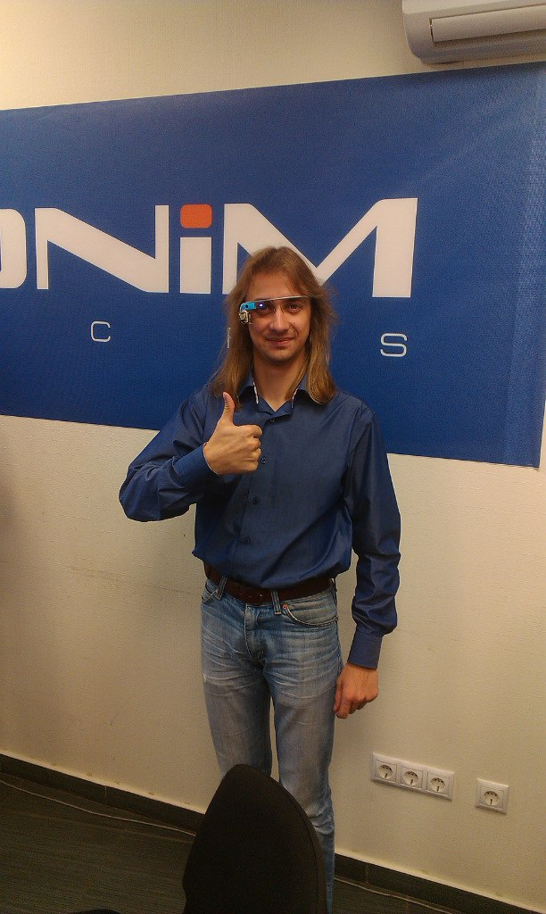

Балабанов Алексей Игоревич
молодой специалист

В 2011 окончил Могилёвский областной лицей N1. Учился в БГУИР с 2011 по 2016 на кафедре систем управления. В 2016 поступил в магистратуру БГУИР.
В должности инженера-программиста проработал более 2 лет. С октября 2014 года работает в этой должности в ООО “Аксоним”. Компания занимается контрактной разработкой электроники и ПО для встраиваемых систем.